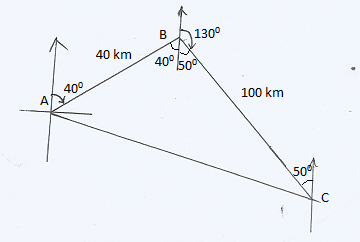
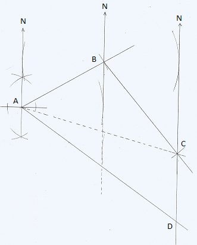
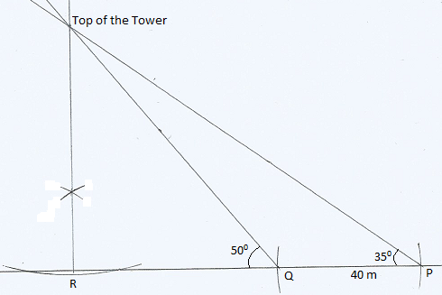
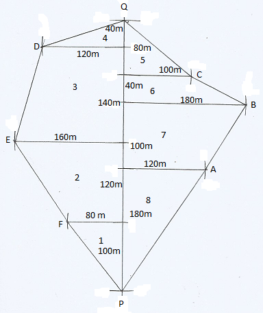

18 Chapter Eighteen: Scale Drawing
Scale Drawing
18.1 Bearing and Distance, Angles of Elevation and Depression
Types of bearing
True Bearing- It can only measured from North pole in a clockwise direction and given in three digits format. For example given that \(065^0\) is the bearing between two points, say \(A\) from \(B\); the angle is obtained at point \(B\) from north pole in a clockwise direction to the line joining \(A\).
Compass bearing- It can be measured from either North or South pole in either clockwise or anticlockwise direction depending on the side the target object is located. For example if point \(A\) is \(60^0\) North-West of point \(B\), then point \(A\) is on a compass bearing of \(N60^0W\) from point \(B\).
18.2 Solved Examples
Three towns A, B, and C are situated such that town B is 40km on a bearing of 0400 from town A. Town C is 100 km on a bearing of 1300 from town B.
Draw a sketch showing the positions of towns A, B, and C. \((1mk)\)
Calculate:
i. The size of angle ABC \((1mk)\)
ii. The distance of C from A to 1 decimal place \((2mk)\)

i. \(\angle ABC ??? 40^0 + 50^0 = 90^0\)
ii. \[AC^2 = AB^2 + BC^2\] \[AC^2 = 40^2 + 100^2\] \[AC^2 = 11,600\] \[AC = 107.7\,Km\]
A dove flies from a tree A to another tree B which is \(80\, m\) on a bearing of \(060^0\) from A. From B the dove flies \(100\, m\) to tree C which is on a compass bearing of \(S40^0E\) from tree B and finally flies due south to another tree D which is on a bearing of \(1^0\) from A. a) Using a ruler and a pair of compasses only construct an accurate scale drawing showing the positions of A, B, C, and D. \((scale : 1\, cm=10\, m)\)
b) By measurement from your scale drawing determine:
(i) The distance and compass bearing of A from C. \((2mks)\)
(ii) The distance of D from C. \((1mks)\)
(iii) The distance and compass bearing of A from D \((2mks)\)
(a)

(b)
(i) Distance of A from \(C = 139 ? 1 m\) ;
Compass bearing of A from \(C = N 75^0 ? 10 W\)
(ii) Distance of D from \(C = 58 ? 1m\)
(iii) Distance of A from \(D = 164 ? 1m\) ;
Compass bearing of A from \(D = N 55^0 ? 10 W\)
The angle of elevation of the top of a vertical tower from a point P is \(35^0\). The angle of elevation of the top of the tower from another point Q which is nearer the foot R of the tower is \(50^0\). The distance between Q and P is \(40\, m\) and the points P, Q, and R are on the same straight line on level ground.
(a) Use a scale of 1cm to represent 10 m, draw an accurate scale drawing to represent the above information. \((4mks)\)
(b) Use your scale drawing to determine:
(i) The height of the tower \((2mks)\)
(ii) The distance QP \((2mks)\)
(iii) The distance of P from the top of the tower \((2mks)\)
(a)

(b)
(i) Height of the tower \(= 68 \pm 1m\)
(ii) \(RQ = 58 \pm 1 m\)
(iii) Distance of P from top of the tower \(= 120 \pm 1 m\)
The following measurement were recorded in a book of a virgin land using PQ as the base line. And \(PQ=400 \,m\)

a) Using a scale of 1: 4000, draw an accurate map of the farm. \(\hspace{4.3cm} (4mks)\)
b) Determine the actual area of the farm in hectares.\(\hspace{6cm} (4mks)\)
c) If the farm is on sale at 320,000 per hectare, Find how much the farm costs.\(\hspace{1.9cm}(2mks)\)
a)
 b) The Area of the farm is given as follows:
\[ \begin{align*} Label \,1 &\Rightarrow &\frac{1}{\cancel2}\times \cancelto{50}{100}\times80&=4,000 \,m^2\\ Label\,2 &\Rightarrow &\frac{1}{\cancel2}\times \cancelto{60}{120}\times(160+80)&=14,400\,m^2\\ Label\,3 &\Rightarrow &\frac{1}{\cancel2}\times \cancelto{70}{140} \times (120+160)&=19,600 \,m^2\\ Label\,4 &\Rightarrow &\frac{1}{\cancel2} \times \cancelto{20}{40}\times 120&=2,400 \,m^2\\ Label \,5 &\Rightarrow &\frac{1}{\cancel2}\times \cancelto{40}{80}\times100&=4,000 \,m^2\\ Label \, 6 &\Rightarrow &\frac{1}{\cancel2}\times \cancelto{20}{40}\times (100+180)&=5,600\,m^2\\ Label \, 7 &\Rightarrow &\frac{1}{\cancel2}\times \cancelto{50}{100}\times(180+120)&=15,000\,m^2\\ Label \,8 &\Rightarrow &\frac{1}{\cancel2}\times \cancel{90}{180}\times120&=10,800\, m^2\\ \end{align*} \]
\[\therefore The\,total\, Area \, of\, the \,Farm \Rightarrow \frac{75,8\cancel{00}}{10,0\cancel{00}}=7.58 \,ha \]
c) The farm cost is given by:
\[\Rightarrow 7.58\times320,000=Ksh. 2,425,600\]
- Problems to solve
The scale of a map is given as \(1:50,000\). Find the actual area in hectares of a region represented by a right-angled triangle of base 5cm and height 6cm. \(\hspace{1.5cm} (3mks)\)
The angle of elevation of the top of a flag post from point A on a level ground is \(24\,^{\circ}\). The angle of elevation of the top of the flag post from another point B nearer the flag post and 20m from A is \(36\,^{\circ}\).
a) Use a scale of 1cm to represent 5 m, and draw an accurate scale drawing to represent the above information. \(\hspace{9.7cm} (4mks)\)
b) The height of the flag post. \(\hspace{7.8cm} (2mks)\)
c) The distance from point B to the top of the flagpole. \(\hspace{3.6 cm} (2mks)\)
d) Distance of A from the top of the flag post. \(\hspace{5.1cm} (2mks)\)
A plane leaves town P to town Q on a bearing of $ 120,^{}$and a distance of 300km. It then flies 400km on a bearing of \(050\,^{\circ}\) to town R. Find, by scale drawing the distance and compass bearing of P from R. \(\hspace{7.7cm} (3mks)\)
Three ports A, B, and C are situated in such a way that port A is 140km on a compass bearing of \(N\,60^0\, E\) from port B. Port C is 180km on a compass bearing of \(S\,30^0\, E\) from A. A ship S is docked in the sea, 90km on a bearing of \(190^0\) from port
a) Using a scale of 1cm to represent 20km, draw a diagram to show the position of ports A, B, C, and ship S. \(\hspace{10.0cm} (4mks)\)
b) Using your diagram find
i) The distance between the ship and the port A \(\hspace{4.7cm} (1mk)\)
ii) The distance and bearing of the ship from port C \(\hspace{4.0cm} (2mks)\)
iii) The distance from B to C \(\hspace{8.0cm} (1mk)\)
iv) Compass bearing of S from A \(\hspace{7.1cm} (2mks)\)
Four schools Mucagara, Kerugoya, Kiamutugu, and Kiburia are such that Kerugoya is 22 km from Mucagara on a bearing of \(220\,^{\circ}\), Kiamutugu is to the east of Mucagara and 6 km away while Kiburia is 8 km on a compass bearing of \(S42^0E\) from Kiamutugu.
a) Using a scale of 1:200,000 draw a scale diagram showing the relative positions of the four schools. \(\hspace{12.5cm} (5mks)\)
b) Using your diagram determine the distance and bearing of Kiburia from Kerugoya \(\hspace{0cm} (2mks)\)
c) The distance and compass bearing of Kerugoya from Kiamutugu \(\hspace{2.9cm} (3mks).\)
Four towns P, R, T, and S are such that R is 90km directly to the north of P and T is on a Bearing of \(295\,^{\circ}\) from P at a distance of 75km. S is on a compass bearing \(N30\,^{\circ}W\) from T and a distance of 40km.
a) Using a scale of 1cm to represent 10km, make an accurate scale drawing to show the relative position of the towns. \(\hspace{8.5cm} (4mks)\)
b) Find:
i) The distance and the bearing of R from T \(\hspace{6.2cm} (2mks)\)
ii) The distance and the bearing of S from R \(\hspace{6.0cm} (2mks)\)
iii) The compass bearing of P from S \(\hspace{7.2cm} (2mks)\)
Two airplanes, T and S leave airport A at the same time. S flies on a bearing of \(062\,^{\circ}\) at 600km/h while T flies on a bearing of \(290\,^{\circ}\) at 750 km/h.
a) Use a suitable scale, to draw a diagram showing the relative position of the airplanes after two hours. \(\hspace{11.3cm} (3mks)\)
b) Use your diagram to determine:
i) The distance between the two airplanes. \(\hspace{6.0cm} (2mks)\)
ii) The bearing of T from S. \(\hspace{8.8cm} (1mk)\)
c) Aeroplane T later flew to the East at the same speed for one hour. Show its final position on the diagram in (a) above. Determine:
i) Its final distance from A.\(\hspace{8.6cm} (2mks)\)
ii) Its final bearing from S. \(\hspace{8.7cm} (1mk)\)
Three Kenyan warships A, B, and C are at sea such that ship B is 520km on a bearing of \(040^{\circ}\) from ship A. Ship C is 600km from ship B on a bearing of \(130\,^{\circ}\). An enemy ship D is sighted 900km due south of ship B.
a) Taking a scale of 1cm to represent 100km locate the position of the ships A, B, C, and D. \(\hspace{13.5cm} (4mks)\)
b) Find the compass bearing of:
i) Ship A from ship D \(\hspace{9.5cm} (1mk)\)
ii) Ship D from ship C \(\hspace{9.5cm} (1mk)\)
c) Use the scale drawing to determine
i) The distance of D from A \(\hspace{8.5cm} (1mk)\)
ii) The distance of C from D \(\hspace{8.5cm} (1mk)\)
d) Find the bearing of:
i) B from C \(\hspace{11.4cm} (1mk)\)
ii) A from C \(\hspace{11.3cm} (1mk)\)
An expedition has 5 sections AB, BC, CD, DE, and EA. B is 250 m on a bearing of \(060\,^{\circ}\) from A. C is 520 m from B. The bearing of B from C is \(310\,^{\circ}\). D is 430m on a bearing \(240\,^{\circ}\) from C. E is 220 m on a bearing \(023\,^{\circ}\) from D.
a) Sketch the route \(\hspace{10.2cm} (1mk)\)
b) Use a scale of 1cm to 50m to draw an accurate diagram representing the route. \(\hspace{13.4cm} (5mks)\)
c) Use your diagram to determine
i) The distance in metres and bearing of A from E \(\hspace{4.7cm} (2mks)\)
ii) Compass bearing of D from A \(\hspace{7.7cm} (2mks)\)
Three boats X, Y, and Z are approaching a harbour H. X is 60km from the harbour on a bearing of \(80\,^{\circ}\). Y is 75 km from the harbour on a bearing of \(135\,^{\circ}\) and Z is due West of Y and on a bearing of \(210\,^{\circ}\) from the harbour.
a) Using a scale of 1cm rep 10km make a scale drawing showing the positions of the three boats relative to the harbour. \(\hspace{8.0cm} (4mks)\)
b) i) Using the scale drawing find; the distance and bearing of Y and X. \(\hspace{1cm} (2mks)\)
The distance of Z from the harbour. \(\hspace{6.0cm} (2mks)\)
The distance and compass bearing of Z from X. \(\hspace{4.0cm} (3mks)\)
An aircraft leaves point A and flies on a bearing of \(030\,^{\circ}\) to a second point B, which is 500km from A. From B, the aircraft then flies on a bearing of \(328\,^{\circ}\) to a third point C which is 800km from B. The aircraft then flies directly back to A from C at a speed of 200 km/h.
a) Using a scale of 1cm rep 100Km make a scale drawing showing the positions of the aircraft. \(\hspace{12cm} (4mks)\)
b) Time taken to fly directly from C to A. \(\hspace{6.5cm} (2mks)\)
c) The bearing in which it would fly from C to A. \(\hspace{5.4cm} (1mk)\)
d) Locate point D on a bearing \(210\,^{\circ}\) from C and on a compass bearing of \(N45\,^{\circ}W\) from A. Calculate BD in kilometers. \(\hspace{9.0cm} (2mks)\)
e) What is the bearing of D from B? \(\hspace{7.7cm} (1mk)\)
Five towns V, W, X, UY, and Z are situated such that W is 250km east of V. X is 320km from W on a bearing of \(145\,^{\circ}\). Y is 380km on a bearing of \(225\,^{\circ}\) from X. Z is on a compass bearing of \(40\,^{\circ}\) from V but \(278\,^{\circ}\) from X.
a) Draw the diagram representing the position of the towns. (Use a scale of 1cm to represent 50km). \(\hspace{12.5cm} (4mks)\)
b) From the diagram determine
The distance in km of V from Z \(\hspace{7.9cm} (1mk)\)
The Compass bearing of Y from W \(\hspace{7.2cm} (2mks)\)
c) A plane heading to town X takes off from town Y and flies upwards of a constant angle which is less than \(90\,^{\circ}\). After flying a distance of 390km in the air it sees town X at an angle of depression of \(35\,^{\circ}\). Calculate the distance of the plane from X at this point. \((3mks)\)
A bird flies from a tree P to another tree Q which is 95 metres on a bearing of \(040\,^{\circ}\) from P. From Q the bird flies 55 metres due East to another tree R and finally flies due South to another tree S which is on a compass bearing of \(S35\,^{\circ}E\) from Q.
a) Construct an accurate scale drawing showing the positions of P, Q, R, and S. Use a scale of \((1cm = 10m)\).\(\hspace{10.8cm} (4mks)\)
b) i) From your diagram measure the distance and compass bearing of P from R. \(\hspace{0.0cm} (3mks)\)
The distance of S from R in metres. \(\hspace{7cm} (1mk)\)
The distance and bearing of S from P in metres. \(\hspace{4.8cm} (2mk)\)